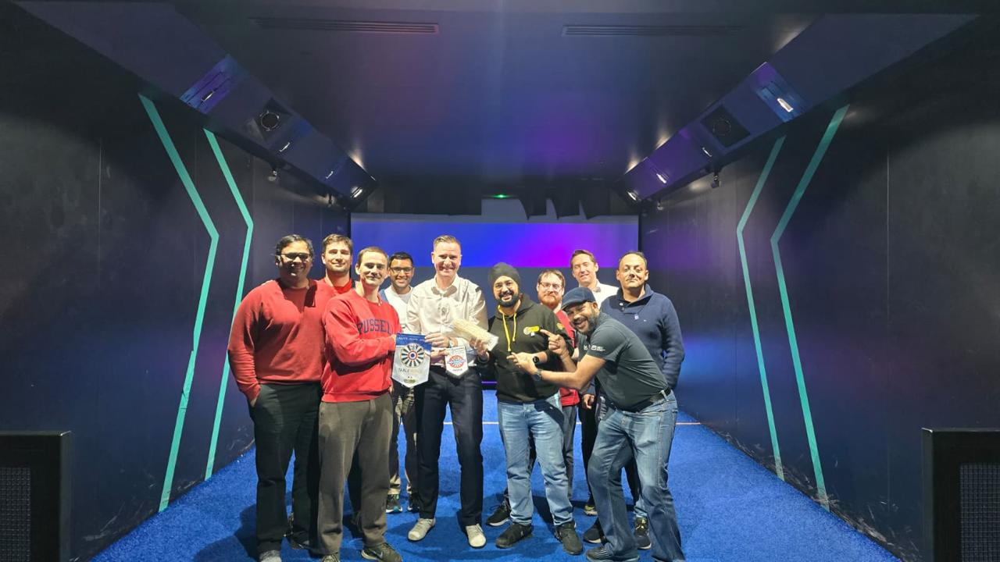

ROUND TABLE LONDON WEST END NO. 623
The Westenders Guide 2026-2027
A modern fellowship community for men under 45 — blending friendship, community impact, and unforgettable London socials.
About London West End 623
We are a vibrant Round Table based in central London. Across the year we host social nights, business meetings, volunteering initiatives, and national/international events. Our mission is simple: meaningful friendship, personal growth, and doing good while having fun.
Gallery Highlights
A snapshot of life at London West End 623.
2026-2027 Programme
Plans and locations may change. Always check WhatsApp / Spond for latest updates.
Meet the Tablers
The Visiting Book
National and international Tablers can leave a digital note after meeting the Westenders.
Recent Entries
Frequently Asked Questions
What is Round Table London West End 623?
Round Table London West End No. 623 is a fellowship and social club for men aged 18–45 based in central London. We are part of Round Tables of Great Britain and Ireland (RTBI) and run events, socials, volunteering projects, and international fellowship activities throughout the year.
Who can join Round Table London West End?
Membership is open to men aged 18–45. To express interest, contact us at london.westend@roundtable.org.uk or reach out via our social media channels.
How do I join an event or social?
Use our contact email or social channels to express interest. Visiting Tablers and guests are always welcome — please message us ahead of time so we can expect you.
Can visiting Tablers from other clubs attend?
Yes — we welcome visiting Tablers from any Round Table club in the UK and internationally. Please message us in advance. You can also sign our digital Visiting Book on this site after meeting the Westenders.
Where does London West End 623 meet?
We meet at venues across London's West End, frequently in Soho and nearby areas. Specific locations for each event are shared via WhatsApp and Spond — check the Programme section for the full schedule.
What types of events does Round Table London West End 623 run?
We run monthly business meetings, themed social nights, sport and outdoor activities, charity fundraisers, and national/international Round Table gatherings. Our programme runs from April to April each year.
Where are updates and final event details published?
Official event updates and last-minute changes are shared via WhatsApp and Spond. The full schedule for the year is listed on this website under the Programme section.